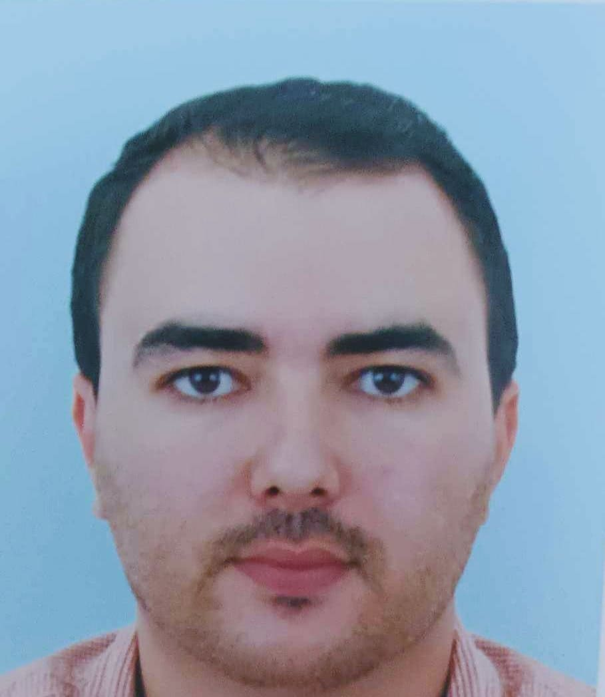

Mahmoud El Ahmadi
Maître de conférences en mathématiques
Département de Mathématiques, Faculté des Sciences et Techniques de Fès, Université Sidi Mohamed Ben Abdellah (USMBA), Maroc. Laboratoire de Modélisation et Structures Mathématiques (LMSM).
Analyse non linéaire, équations aux dérivées partielles et équations différentielles.

Parcours académique et axes de recherche
Le Pr. Mahmoud El Ahmadi est enseignant-chercheur au Département de Mathématiques de la Faculté des Sciences et Techniques (FST) de Fès. Ses activités académiques se concentrent sur l'analyse non linéaire, avec une expertise spécifique portée sur l'étude des équations aux dérivées partielles (EDP) et des équations différentielles.
Affilié au Laboratoire de Modélisation et Structures Mathématiques (LMSM), il mène des recherches théoriques et qualitatives sur des problèmes complexes issus des mathématiques appliquées et des sciences de l'ingénieur, privilégiant l'approche par modélisation mathématique.
Ce site est dédié à la diffusion de ressources pédagogiques (cours, travaux dirigés et annales d'examens) à destination des étudiants de licence et de master. Il vise à soutenir la formation universitaire, à favoriser l'autonomie intellectuelle des étudiants et à garantir un accès structuré et pérenne aux documents scientifiques de référence.
Ressources pédagogiques
Annonces pédagogiques
- [29 Mars] Mise en ligne de la Série 2 d'Analyse II.
- Ressources : les supports de cours et les séries de TD sont mis à jour périodiquement selon l'avancement du programme.
- Communication : pour toute correspondance officielle, l'usage de votre adresse institutionnelle (@usmba.ac.ma) est impératif.
- Méthodologie : la réussite repose sur une préparation méthodique des exercices de TD, une étude approfondie des cours et une présence assidue aux séances...